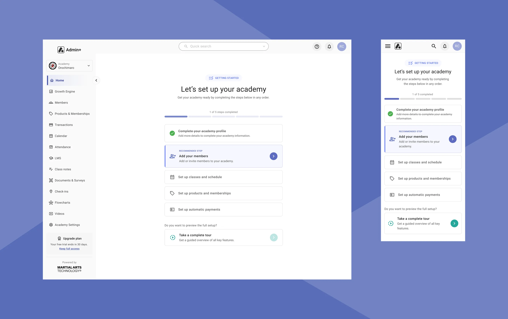
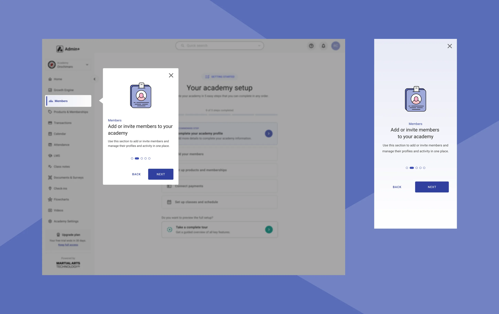
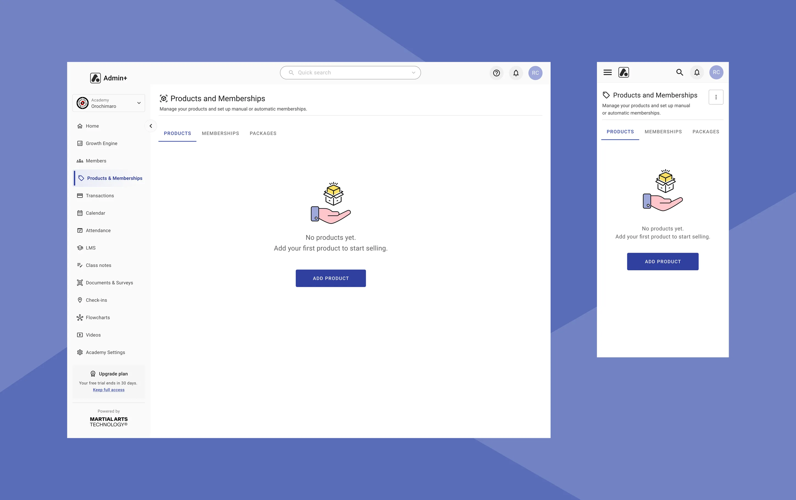

BJJLINK: From Manual Onboarding to a Self-Service Experience
From sales-assisted onboarding to self-service activation, empowering customers to get started faster while reducing operational dependency.

BJJLink Admin+ is a B2B SaaS platform that helps martial arts academies manage memberships, billing, scheduling, attendance, student progression, and other day-to-day operations.
This project introduced a self-service onboarding experience that replaced a previously manual process. To support this transition, key platform workflows were redesigned to simplify account setup, improve consistency, and reduce operational dependency.
37 Days → Minutes
Reduced onboarding from a process that could take up to 37 days to a guided self-service setup completed in minutes.
Operational Independence
Enabled academy owners to create, configure, and activate their accounts without manual support.
Analytics Foundation
Defined success metrics, mapped key user events, and implemented analytics to support continuous product improvement.
How might we enable independent account setup while creating a more scalable platform?
01
Operational Dependency
Account setup relied on manual support, creating operational bottlenecks and delaying customer activation.
02
Activation Friction
A fragmented onboarding flow made it difficult for users to complete essential setup tasks with confidence.
03
Structural Complexity
An inconsistent information architecture made navigation difficult and limited the platform's ability to scale.
To uncover onboarding challenges and identify opportunities for improvement, I conducted a multi-layered discovery process spanning business, product, user, and market perspectives.
| Area | Activities |
|---|---|
| Business Discovery | Stakeholder alignment, business objectives, and success metrics. |
| Competitive Research | Market benchmarks, onboarding patterns, best practices. |
| Product Audit | System mapping, user flows, usability evaluation. |
| User Insights | Customer feedback analysis, analytics review, and identification of user behaviors and friction points. |

Academy Owner
Decision Maker
Responsible for both business operations and customer experience within the academy. Needs a clear view of business health without digging through spreadsheets.
Challenges
- Limited time for software setup
- High operational complexity
- Need to migrate from existing systems

Operations Staff
Daily Power User
Responsible for managing the academy's operations, including student records, class scheduling, membership management, and administrative processes.
Challenges
- Maintaining accurate and up-to-date student records
- Quick access to information needed for daily operations
- Balancing operational responsibilities while supporting students and instructors
Through discovery, I uncovered the key challenges and opportunities that informed the product strategy and shaped the final solution.
-
Clients struggled to understand the value of switching platforms
Many academy owners were unable to quickly visualize the financial and operational benefits of engaging on a new platform, making friction early in the conversion funnel easy to hit.
Opportunity: Let prospects quantify value before committing to a trial or demo. -
Different leads required different conversion paths
Through product audits and ad feedback reviews, I identified friction points in user behavior, especially on the Compare Plans page, which did not effectively support users with different intents and levels of purchase readiness.
Opportunity: Support multiple entry points based on both intent and readiness. -
Manual trial activation was limiting scalability
Creating and configuring a new BJJLink account required manual effort, increasing operational load and slowing customer activation.
Opportunity: Create a scalable self-service activation model and remove critical setup dependencies. -
Product adoption depended on successful onboarding
Before accessing the platform's value, new customers had to complete several critical setup tasks, creating friction and increasing the risk of abandonment.
Opportunity: Guide users through these critical steps to ensure onboarding completion. -
Product complexity reduced usability and discoverability
Inconsistent navigation patterns, fragmented workflows, and varying UI conventions made the product hard to learn and use.
Opportunity: Improve key management features such as memberships, schedules, and student management.
Discovery revealed opportunities far beyond onboarding. By focusing on the full customer journey, I identified five strategic initiatives to improve acquisition, activation, and product adoption.
| Solution | Opportunity | Journey Stage |
|---|---|---|
| Savings Calculator | Increase value clarity and strengthen purchase confidence early in the acquisition funnel. | ACQUISITION |
| Book a Demo | Support different conversion paths through a complementary, sales-assisted conversion path. | ACQUISITION |
| Start a Trial | Create a scalable self-service activation model and remove critical setup dependencies. | ACTIVATION |
| Self-Service Onboarding | Accelerate time-to-value and increase onboarding success through guided setup flows. | ONBOARDING |
| Usability Improvements | Improve discoverability, consistency, and long-term product adoption. | ADOPTION |
KPIs established to measure success
Self-Service Adoption
Drive more academies to start, complete onboarding, and convert.
KPIs
Faster Activation
Help new customers reach their first meaningful outcome as quickly as possible.
KPIs
Operational Efficiency
Reduce support dependency and create a foundation for future growth.
KPIs


